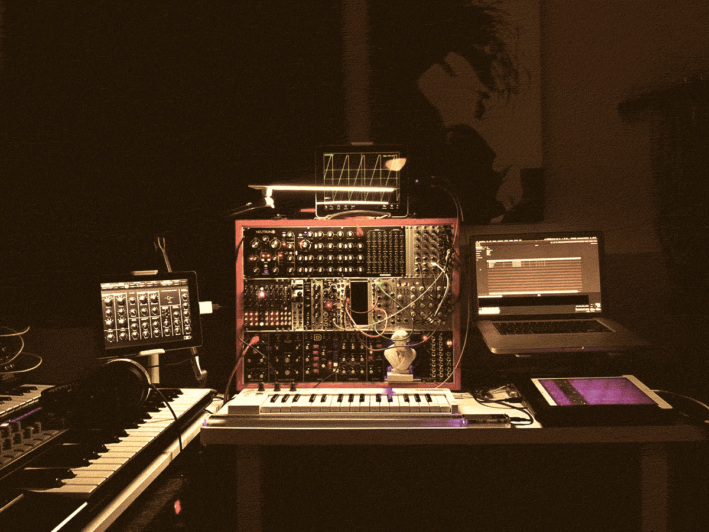
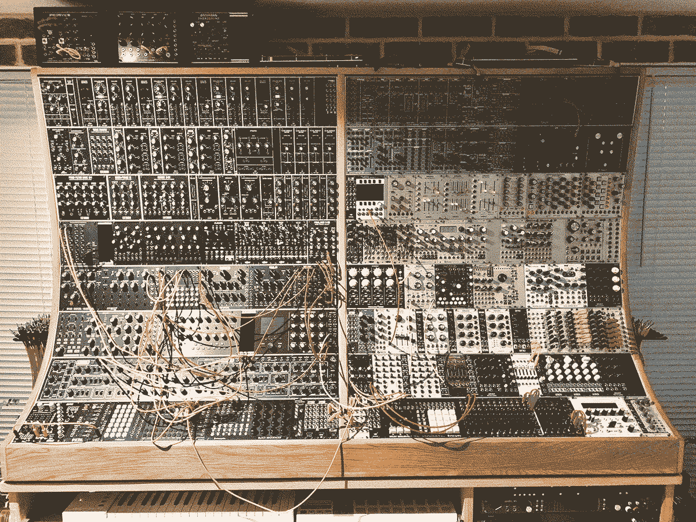
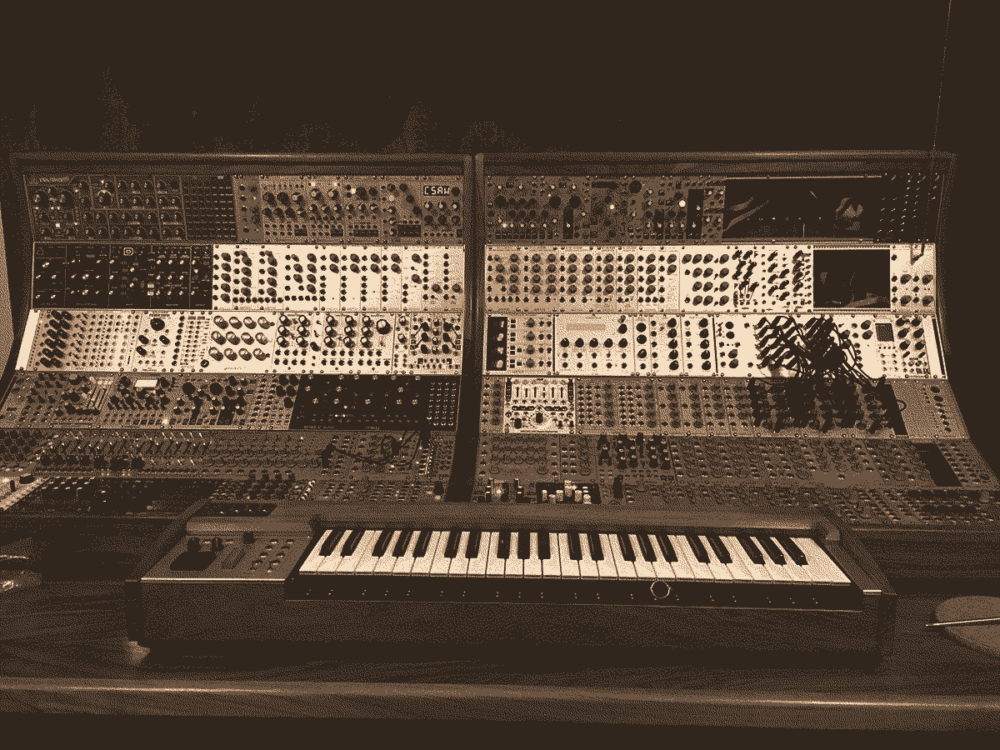

Interview: SynthRacks
25/06/2022. Interview by Cessative State

Run by John Lancaster, Pembrokeshire-based company SynthRacks offer high quality wooden Eurorack cases at great prices, for both travel and studio.
Have you always worked as a carpenter?
StudioRacks was born in 2004. At the time I was working as a Building Site manager and had a career in large building civil engineering projects as an engineer and manager. Making things from wood was a hobby I developed when moving to Pembrokeshire from Brighton, where a combination of space and having zero furniture for the house kicked me into action. Being made redundant in 2008 turned StudioRacks into my sole means of income, which was great as the combination of being able to work at home in my newly constructed workshop, with music constantly playing loud and then to throw into that I was making things for the twinkly lights of recording studios gear to sit in, that was just perfect for me.
And how did you get into building modular cases?
SynthRacks and modular cases came along in 2016 when a good client wanted me to make this thing called a Eurorack as he was about to start reviewing 3U synth modules for a well know Music magazine. He needed a largish case and power for it. We battled through it together, gaining a fair bit of knowledge about rails frames and cases, which was a bit bewildering at first. After that I threw myself headfirst into really getting to grips with mechanical sizes and understanding, in practical terms, the power side of Eurorack and then persuading Tobias, my eldest son, to build me a new web site and help with administrating both StudioRacks and Synthracks.
Do you work alone or do you have a team to help out?
Between 2010 and 2018 I generally had part-time help from several people, one at a time, all great people. Moving to a larger workshop last year was a necessity as we had 4 pairs of hands making things in the workshop. Sarah, Caroline, Harry and myself. Music is still constantly playing.
What's the biggest case you've built? And do you ever have to manage expectations for customers or is the sky literally the limit? How big is too big?
That is an easy one! Too big is a double-bay 24U 168hp rack (see below). When you have to stand on ladders to work on it and it's much too heavy for two people to lift, even before power and modules are added… that’s too big!
I know you should always calculate your power requirements but I frequently hear of lack of power and lights flashings on 126hp rows, but not 104hp rows… that is real world feedback.

I've owned a few of your cases. The wood selection always looks great and the oil finishes are rad. What's your favourite part of the process?
Again this is an easy one- I like the initial shaping and cutting of the materials, particularly for Eurorack cases, as they do tend to be a bit more shapely and involved, but then I get tremendous joy (when it goes right!), from seeing the finished article that the rest of the team have carried through.
What does your musical world look like? What are you listening to when you're building the racks?
We are all getting on in age… Heavy Metal Harry with his 70’s rock; dance music raving with Sarah; Caroline (whose husband and son, are to me, annoyingly great guitarists) has a more melodic music taste. I purposely buy/download music of artists to listen to as we make cases and furniture for those entertaining us.
“What do you mean Harry when you say 'who is Underworld?'”
“Yes Caroline, Pete Townshend is in quite a big well known band!”
“Oh for fucks sake has not one of you heard of Michael Kiwanuka!?”
“Wow…. Yes! That is right John…. Chris Carter was in Throbbing Gristle.”
Are you working on any interesting projects right now?
Tobias is working on a revamp of the SynthRacks website which is taking a lot of work from both of us, when that lands there will be few new case shapes.
And finally, where's the best place to keep up to date with SR?
We really should get back more to the social media platforms but until then, contact through emails is the most robust. The music is too loud; I just don’t hear my phone!
Visit SynthRacks and StudioRacks to check out their cases.
